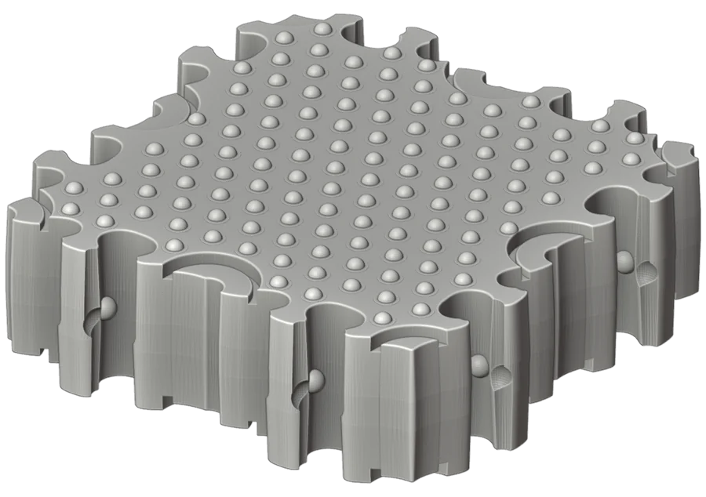
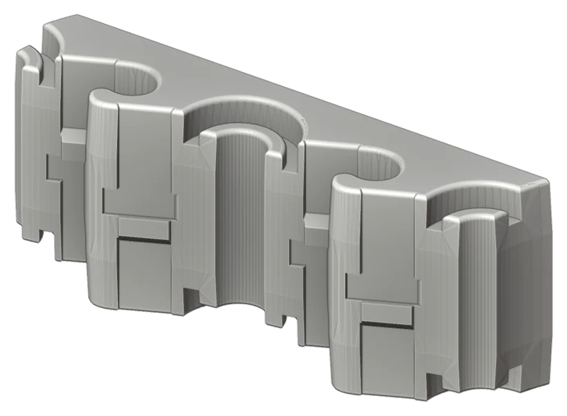
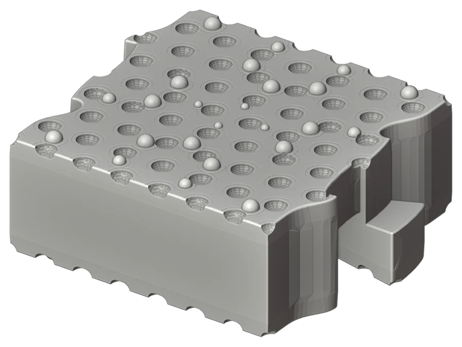
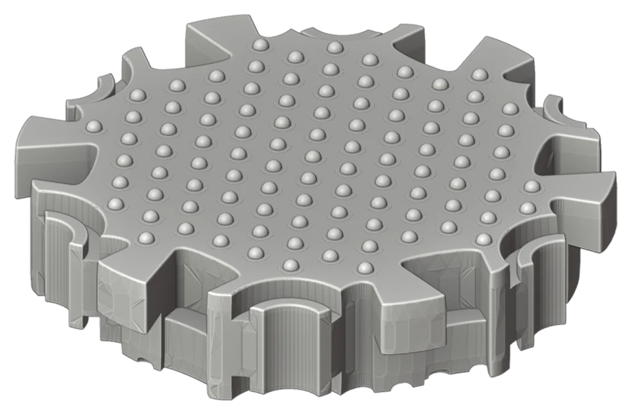
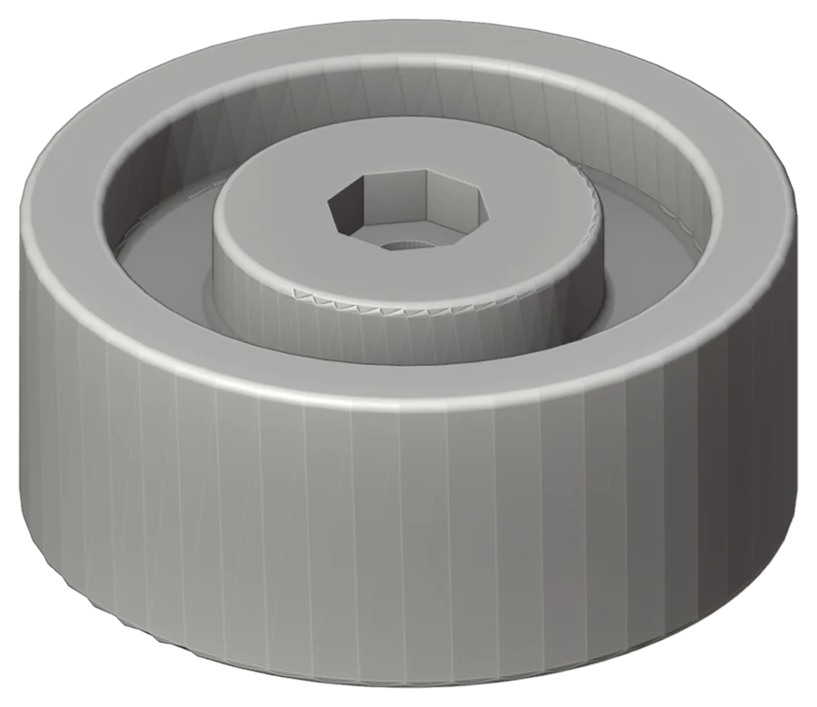
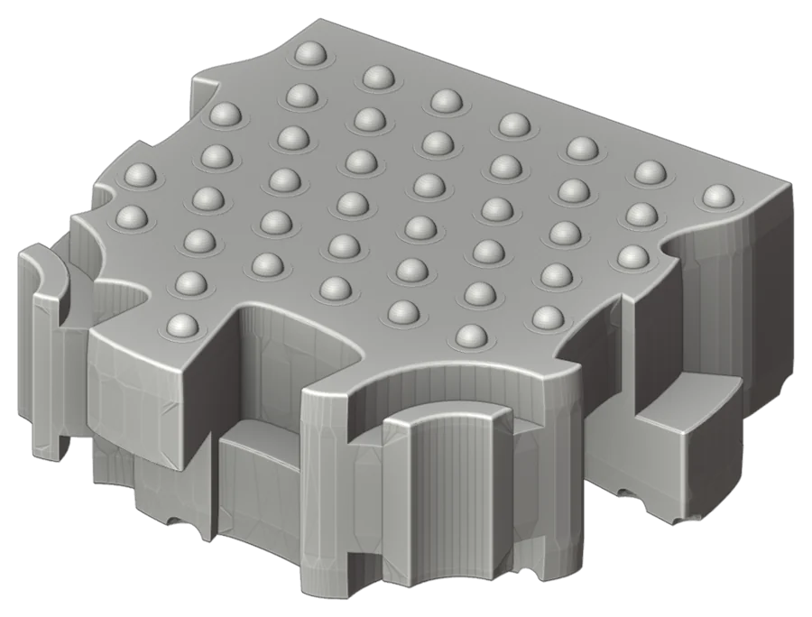
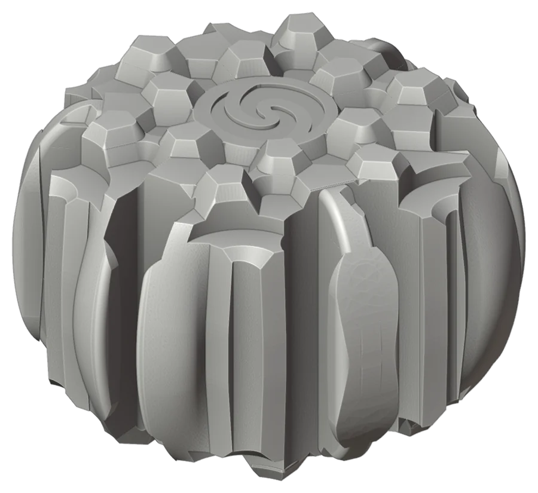

A SeaBrick has to do three things at once. It has to float. It has to lock to its neighbours well enough that a platform of thousands behaves like one body. And it has to come out of a mould cheaply, anywhere in the world. Most of the design history is the story of those three requirements arguing with each other.
2022: the first family
The first 3D designs were drawn by an industrial designer in January 2022 and printed within days at a small Vancouver print studio, 3DSMITH, at ten centimetres across. By February the locking system had been fully redrawn. The black-and-white drawings for the first patent, in March 2022, already showed a family of shapes: square, triangle, hexagon, rhombus, trapezoid and a "mini". Through 2022 the versions ran past v20 as the locking features and wall thicknesses were refined, and hexagon and triangle bricks went to the printer in June and November.




2022 to 2023: hollow cores and the walkthrough
When the UBC Capstone results showed the composite itself was about as dense as water, the brick became a two-part shell with hollow internal cells. A February 2023 "walkthrough" documented the locking system of that generation, a set of bumps and tongues, and plaster prototypes were cast that spring to try it by hand.


2023 to 2024: the hinge-lock
In October 2023 that system was superseded by the first hinge-lock concept, developed over the following year with 3D printing advisor Brady Kirk and designer Xiaoyuan Geng. Bricks could now be joined and separated with a rotating motion rather than brute force. In September 2024 the hinge-lock was declared final and sent to patent counsel.


2025: the component brick
The next problem was the mould. A complex single casting is expensive to tool and hard to fill reliably with a fibre composite. In 2025, after teaching himself SolidWorks, the project's founder redesigned the brick as a set of simpler moulded components that assemble into the finished unit, finishing the design in August. A provisional patent on the new approach was filed on 9 December 2025.


2026: a system of bricks
Between January and June 2026 about a thousand model bricks in some fifty types were printed, a toy-scale version of the family that made it possible to try arrangements by hand (see the party). The final brick, shown across this site as a smoothed model, is a hexagon about one and a half times as wide as it is tall, with a connector on each of its six sides, designed to be laid flat in mats, stacked in rings to form tubes and towers, and tied course to course with double-height bridges. In September 2026 the first production-oriented version, optimised for a compression press, was completed.


